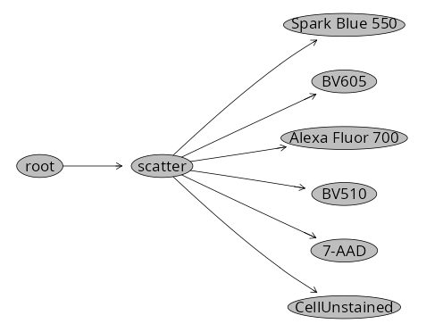

Thanks to David Rach for helping with the Quarto website framework!
Gating Example Setup
Authors
Yuchen Li
David Rach
Background
Per the README.md file, using either commercial software or CytoExploreR, we need to export designated positive and negative populations as .fcs files. These in turn will get stored in designated folders “ref controls” and “af”.
For those more accustomed to the Cytometry in R workflow, we can substitute in the flowWorkspace, flowGate and Luciernaga steps from Signature Matrices to equivalently reach the same point.
Walk-through
Set Up
Since this is not in the original scripts, the respective R packages will likely need to be installed.
Proceed to attach the required R packages to your local environment via the library() call.
library(flowWorkspace)
As part of improvements to flowWorkspace, some behavior of
GatingSet objects has changed. For details, please read the section
titled "The cytoframe and cytoset classes" in the package vignette:
vignette("flowWorkspace-Introduction", "flowWorkspace")
library(Luciernaga)library(flowGate)
Loading required package: ggcyto
Loading required package: ggplot2
Loading required package: flowCore
Loading required package: ncdfFlow
Loading required package: BH
library(dplyr)
Attaching package: 'dplyr'
The following object is masked from 'package:ncdfFlow':
filter
The following object is masked from 'package:flowCore':
filter
The following objects are masked from 'package:stats':
filter, lag
The following objects are masked from 'package:base':
intersect, setdiff, setequal, union
library(stringr)
Identify the .fcs files in their respective folder by providing the file.path() and list.files() function. We can then use load_cytoset_from_fcs() and GatingSet() to bring them into a GatingSet for the subsequent steps.
To facilitate signature extraction, we need to tidy up the existing metadata. Retrieve the existing metadata using pData(), then we will extract the desired strings from the filename to fill out the Fluorophore, Antigen and Type columns
pd <-pData(TheGatingSet)Updated_cell_pd <- pd |>mutate(raw =str_extract(name, "(?<=PD_AD_)[^(]+(?=\\()"),Antigen = raw |>str_trim() |>str_extract("^\\S+"),Fluorophore = raw |>str_trim() |>str_remove("^\\S+\\s+") |>str_trim(),Type = name |>str_extract("(?<=\\()([^)]+)(?=\\))"),raw =NULL )Updated_cell_pd <- Updated_cell_pd |>mutate(Fluorophore =case_when( name =="Unstained (Cells)_scatter.fcs"~"CellUnstained",TRUE~ Fluorophore ))Updated_cell_pd <- Updated_cell_pd |>mutate(Antigen =case_when( name =="Unstained (Cells)_scatter.fcs"~"AF",TRUE~ Fluorophore ))Updated_cell_pd <- Updated_cell_pd |>relocate(Fluorophore, Antigen, Type, .after="name")
With our template setup, and our files loaded into a GatingSet, we can add draw cleanup gates to ensure we are only providing our cell type of interest when we draw the positive gates.
To do this, we will leverage the flowGate packages ShinyApp.
With our template setup, we can use the Luciernaga packages InitialUnmixSpanGates() to rapidly implement the corresponding positive gates via the flowGate packages Shiny App.
# Run ManuallyInitialUnmixSpanGates(template=Template, gs=TheGatingSet, subset="scatter", minpercentile=0.75, maxpercentile =0.99)
If using the provided example files, the new gates should be visible when running plot() on our GatingSet.
# Run Manuallyplot(TheGatingSet)

Next up, we can adjust the gate placement using the flowGate ShinyApp by drawing new spans for the areas of the positive peak we want to include. For the unstained, we would include the entire negative peak.
# Run ManuallyCheckUnmixingSpanGates(template=Template, gs=TheGatingSet, AdjustAll=TRUE)
We can then work on exporting the cells that are present within each gate out as their own .fcs file via the Downsampling.R file in the R folder.
Exporting gates as individual .fcs files
Next up, lets use the modified “Downsampling” function from CytometryInR that is in our R folder. We run source() to activate the function in our local environment.
To stick with the original naming syntax, we will need to do some tidying on our template. We can also make a vector of the equivalent gates and isolate the SingleColors from the unstained reference.
Next, using the purrr packages pmap function, we can iterate through the specimens, extract their corresponding gate, and write out with the correct name to our “ref controls” folder
At this point, our “ref controls” and “af” folders have the equivalent files that are needed to follow along for the various unmixing examples. No commercial software required.
![]()